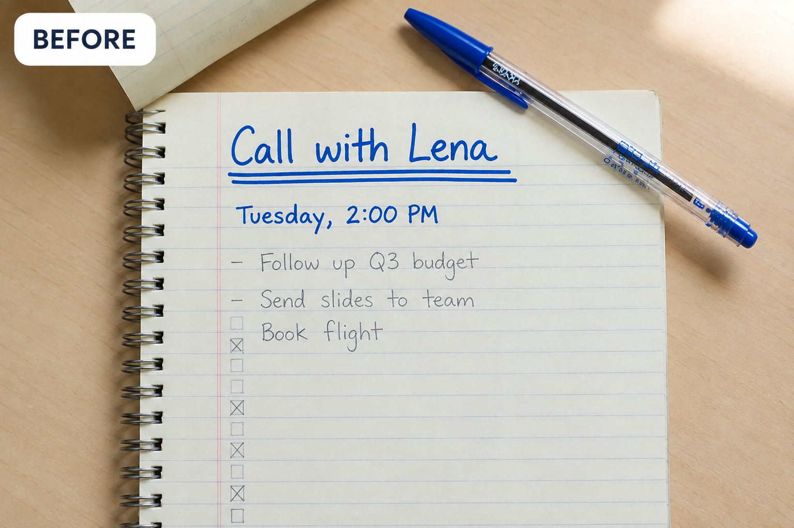
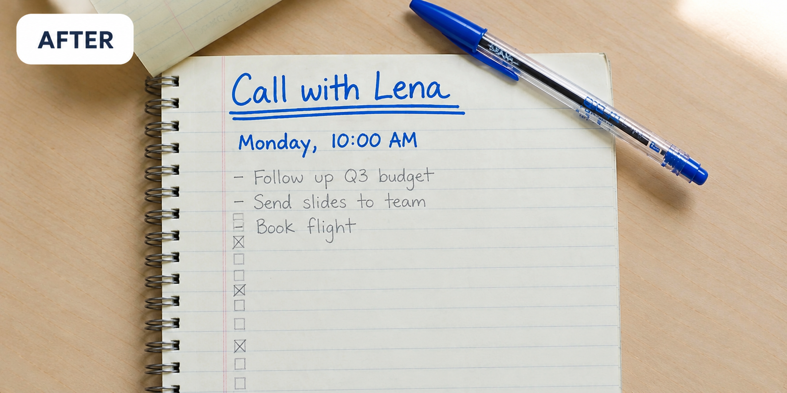
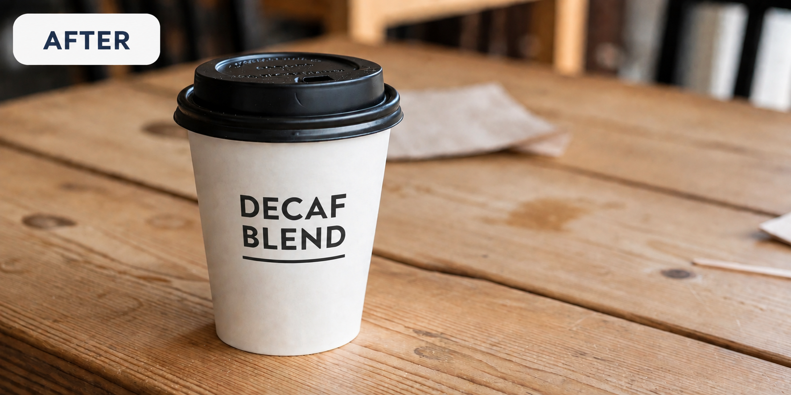

BEFORE
AFTER
WORK · HANDWRITTEN NOTES
Reschedule without rewriting the page
Meeting moved? Edit “Tuesday, 2:00 PM” to “Monday, 10:00 AM” on the notebook line while keeping the handwriting look.
Tue 2:00 PM
→
Mon 10:00 AM
CAFE · CUP PACKAGING
Rename the blend on the same cup
For a new SKU, change “CLASSIC BLEND” to “DECAF BLEND” without reopening the packaging design file.
CLASSIC BLEND
→
DECAF BLEND
BEFORE

AFTER